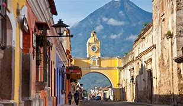
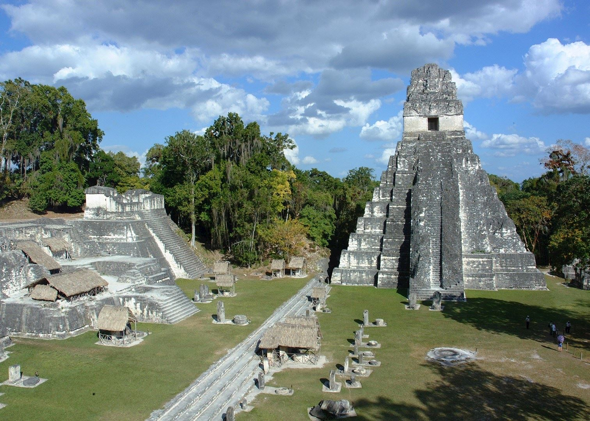
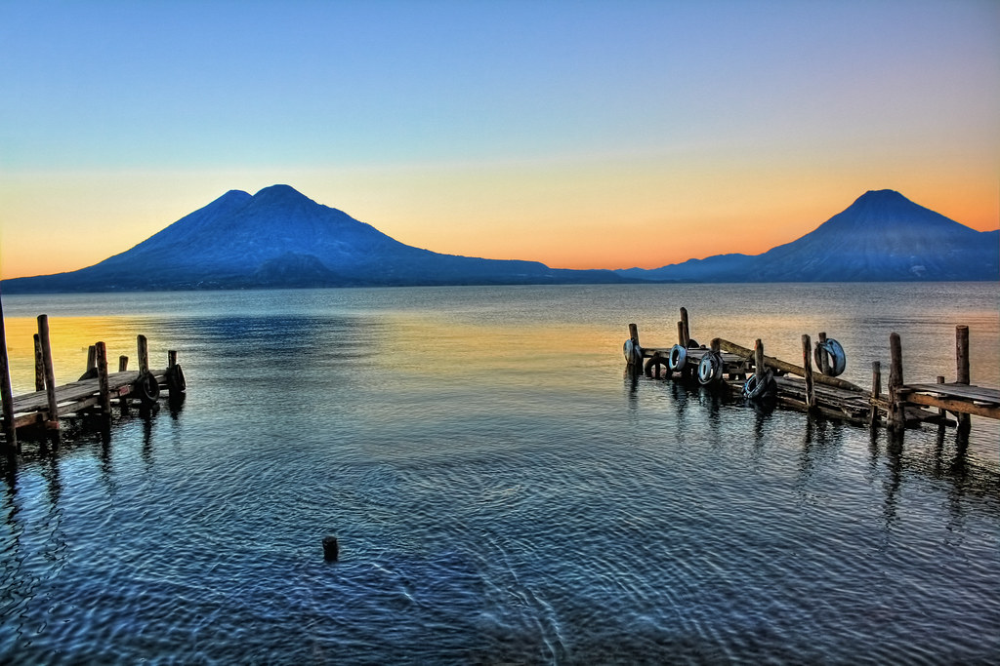
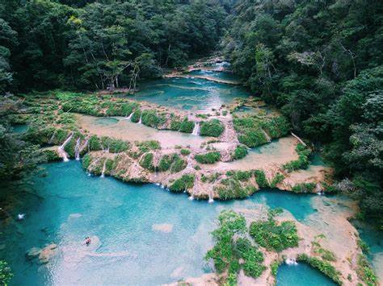

Eunice Magaly Escalante Perdomo 6to. Secretariado Bilingüe
Lugares Turisticos de Guatemala
Antigua Guatemala

Fundada en 1543, fue distinguida durante la época colonial como la ciudad más bella del continente, haciendo gala de magnificas arquitecturas renacentistas y barrocas. Terremotos a lo largo del tiempo fueron destruyendo gran parte de los antiguos monumentos de la ciudad, siendo algunos restaurados mientras otros dejados en ruinas. Hoy declarada Patrimonio de la Humanidad por la UNESCO, es probablemente uno de los más atractivos lugares turísticos de Guatemala, haciendo gala de calles empedradas que serpentean entre antiguas iglesias, conventos y coloridas casonas ricamente ornamentadas. Vale destacar entre sus atractivos el Convento de las Capuchinas, correspondientes a las ruinas mejor conservadas de la ciudad. con ligas profesionales en ese ámbito.
Tikal

Alguna vez capital de uno de los reinos más poderosos
de los antiguos mayas, corresponde sin duda a uno de los lugares turísticos de Guatemala más fascinantes para amantes de la arqueología, una ciudad fundada alrededor del siglo V a.C., que habría alcanzado su máximo esplendor entre el 200 y el 900 d.C., dominando gran parte de la región en el ámbito político, económico y militar. La arquitectura de la antigua ciudad está construida en piedra caliza e incluye vestigios de templos que se elevan más de 70 metros, grandes palacios reales, además de una serie de pirámides menores, palacios, residencias, edificios administrativos, plataformas y monumentos de piedra.
Lago de Atilán

Uno de los escenarios naturales más sorprendentes de Guatemala, reconocido como uno de los lagos más hermosos del mundo, maravillando con sus aguas cristalinas y los tres imponentes volcanes que lo rodean: Atitlán, Tolimán y San Pedro. Entre sus singularidades se encuentran los 12 pueblecitos circundantes, accesibles a través de lanchas que recorren el lago, cada uno con habitantes que visten de trajes típicos que varían significativamente entre pueblo y pueblo. El acceso más común es por la ciudad de Panajachel.
Semuc Campey

Dos sitios naturales ubicados cercanos uno del otro, el primero sin duda es el más espectacular, correspondiendo a un curioso accidente natural donde el Río Cahabón fluye por una longitud de 300 metros bajo la roca, dejando en la superficie un grupo de pozas escalonadas de aguas turquesas y calmas con profundidades de entre 1 a 3 metros, en las cuales es posible bañarse rodado de un exuberante bosque tropical. Debido a su proximidad vale visitar las Cuevas del Lankin, un interesante complejo de salones, cúpulas y curiosas formaciones de piedra caliza que son posibles de recorrer por un circuito abierto al turismo de 400m.